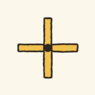
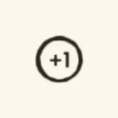
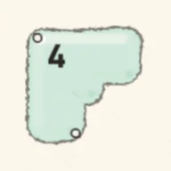
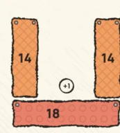

How to play
Boop! is a game where you shoot balls at numbered blocks to wear them down and clear each zone. Clear one and you drop deeper, where the blocks get bigger and new things show up. Your shots are limited, so make each one count. It never ends: see how deep you can go.
A shot, step by step
- Drag anywhere. Drag the way you want to shoot. You don't need to start at the launcher, and dragging further gives finer aim.
- Read the guide. The dotted line shows your ball's path, and orange dots mark what it will hit.
- Let go to fire. Each hit takes 1 off a block's number, and at 0 it pops.

Your run saves itself after every shot, in this browser. Close the page and pick it up later with Continue.
On a keyboard: ← and → aim (hold Shift for fine aim), Space fires, Esc or P pauses.
Balls bounce off every side, the bottom too, and keep going as long as they keep hitting blocks. A ball that goes 4 seconds without touching one fades out. Pop the last block and the next zone comes up right away.
Reading the top
- Depth
- How far down you are. It never ends.
- Shots left
- One per launch. When they run out, the run is over.
- This zone / par
- Shots used here, against the zone's target.
- The bar
- How much of the zone you've cleared.
Earn more shots
Every few zones your launcher upgrades to fire one more ball per shot, still for 1 shot. The numbers grow to match.
Things you'll meet
 BlocksColour and pattern show how tough a block is for its zone.
BlocksColour and pattern show how tough a block is for its zone.
WindmillsSpin when hit and swat the next ball. MushroomsGrow off walls and blocks. Their caps kick balls back harder. If their block pops, they fall.
MushroomsGrow off walls and blocks. Their caps kick balls back harder. If their block pops, they fall.
+1 ringsFly a ball through one for an extra shot. Resting blocksPop what holds them up and they tumble down.
Resting blocksPop what holds them up and they tumble down.
Jelly blocksBalls pass through, slowed down. Each pass takes 1 off.
CupsDrop a ball in to grab the +1 and rattle around. Grey blocksCan't be broken. Use them to bank shots.
Grey blocksCan't be broken. Use them to bank shots.